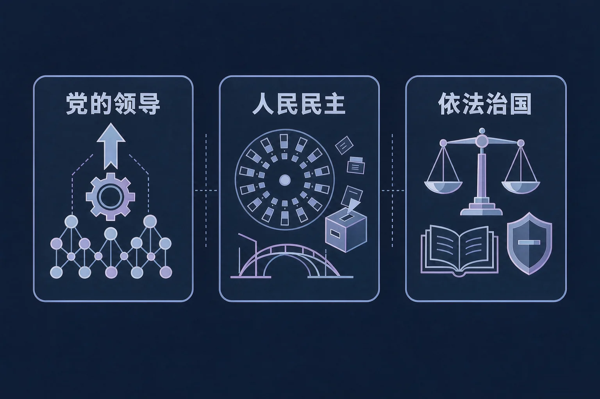
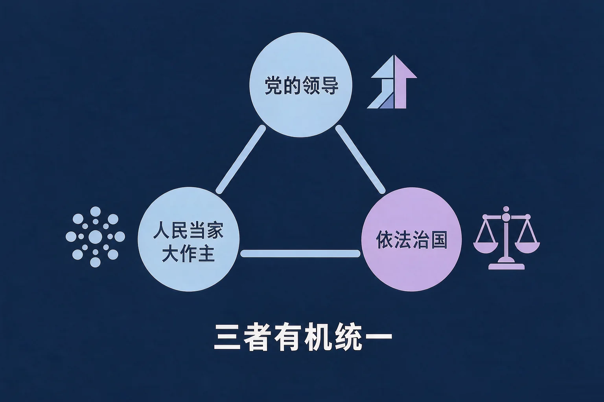
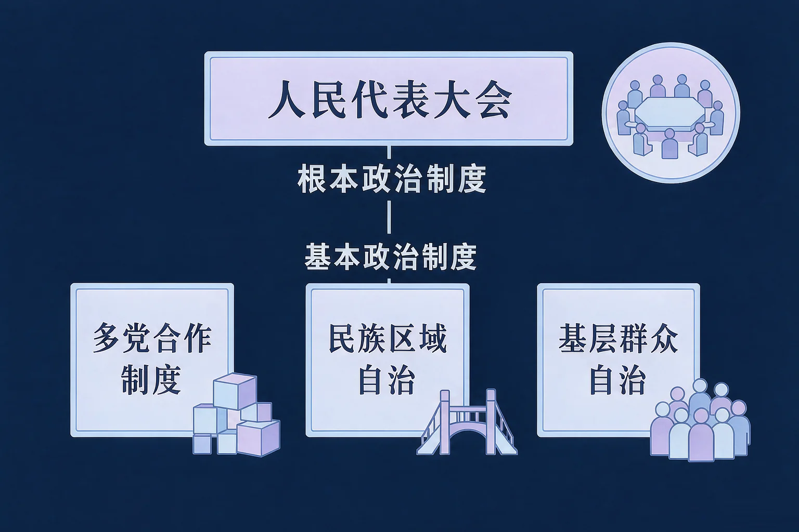

Gallery
v1.0.0 · skill v7.22.0
高中高二 · 政治与法治
谁带领人民治理国家，人民又通过哪些制度行使国家权力？

选一个你真正想弄清的问题，后面的活动都会围着它转。
选择或输入后，这节课会围绕你的问题展开。
先凭直觉选一个，选完立刻看到解释——错了也没关系，正好知道要重点听哪里。
1. 关于中国共产党的领导，下面哪一句表述准确？
中国共产党领导是中国特色社会主义最本质的特征，党的领导是中国特色社会主义制度的最大优势。错因提醒：常见错误是把党的领导和国家政治制度搞混——党的领导是中国特色社会主义最本质的特征，不是一项具体的政治制度；也有的同学误认为党的领导与依法治国彼此分离。
2. 我国人民行使国家权力、实现人民当家作主的根本途径是：
人民代表大会制度是我国的根本政治制度，是人民行使国家权力的根本途径和最高实现形式。错因提醒：这是这一课最高频的常见错误——把人民代表大会制度与基本政治制度搞混。请记准：根本政治制度只有一项，就是人民代表大会制度。
3. 全面依法治国的基本要求是：
全面依法治国的基本要求是科学立法、严格执法、公正司法、全民守法，四者环环相扣。错因提醒：这四句容易与其他提法搞混，有的同学凭印象随意拼凑，结果表述不完整也不准确。
为什么要先弄清这一件事？
我们已经知道，国家一切权力属于人民，人民要来管理国家事务（And）；但人民通过谁来组织、来带领、来凝聚力量，这件事我们往往只有零散的印象（But）；所以这节课先把中国共产党的领导这一段看清（Therefore）。
先记住第一句话：中国共产党领导是中国特色社会主义最本质的特征，中国共产党是中国特色社会主义事业的领导核心，党的领导是中国特色社会主义制度的最大优势。
历史和人民的选择
党的领导地位不是自封的，而是在长期奋斗中形成的，是历史和人民的选择。
中国共产党的先进性
中国共产党是中国工人阶级的先锋队，同时是中国人民和中华民族的先锋队；全心全意为人民服务是党的根本宗旨。

坚持和加强党的全面领导
必须坚持和加强党的全面领导，增强「四个意识」、坚定「四个自信」、做到「两个维护」，把党的领导落实到国家治理的各领域各方面各环节。党的领导是人民当家作主和依法治国的根本保证。
有的同学误认为坚持党的领导就是用党的工作代替国家机关依法履行职责。正确的理解是：党总揽全局、协调各方，支持和保证国家机关依法行使职权，而不是包办代替。也有同学把党的领导搞混成一项具体的政治制度——党的领导是中国特色社会主义最本质的特征，这一点要写准。
🔍 深层理解 换个角度再看一遍这件事，看看能不能说出背后的原理。
看见它：社区里居民开会讨论小区事务，人民代表大会会议上代表审议报告，行政处罚决定书上盖着行政机关的公章——这些场景背后，都站着同一套政治逻辑。
拆开它：判断一条情境落在党的领导、人民当家作主还是依法治国，先问两句：起领导作用的主体是谁？依法行使职权的主体又是谁？两句话问完，落点基本就清楚了。
解释它：为什么必须三者有机统一？因为没有党的领导，人民当家作主和依法治国就失去根本保证；没有人民当家作主，国家权力就会脱离人民；没有依法治国，国家治理就缺少稳定的制度和程序支撑。三者互为条件、相互支撑。
先点一条情境，再判断它主要体现中国共产党的领导、人民当家作主还是依法治国。
先点上面一条情境。
为什么要弄清这一段？
我们已经知道国家一切权力属于人民（And）；但人民到底通过哪些制度来行使权力、参与管理，这些制度的层级和分工又是什么（But）；所以这节课要看清我国政治制度的整体轮廓（Therefore）。
我国是人民民主专政的社会主义国家，国家一切权力属于人民，人民民主专政的本质是人民当家作主。人民当家作主，靠制度来保障。

两个高频错误：一是误认为人民代表大会制度是我国的基本政治制度——它是根本政治制度，基本政治制度有三项；二是把民族区域自治误认为可以脱离国家统一领导，写成「完全自治」「民族自治」。规范的表述是：在国家统一领导下，在各少数民族聚居的地方实行区域自治，设立自治机关，行使自治权。
🔍 深层理解 换个角度再看一遍这件事，看看能不能说出背后的原理。
看见它：同样叫「自治」，含义并不一样：民族区域自治是民族聚居地方依法行使自治权，基层群众自治是村（居）民依法直接管理自己的事务。名字相近，位置不同。
比较它：把四项制度排成一排看层级：人民代表大会制度在最高一层，直接关系国家权力的产生和行使；另外三项在基本层面，从政党协商、民族事务、基层治理三个方向把人民当家作主落到细处。
迁移它：遇到一个陌生的政治生活情境，先看行使权力的主体是谁：权力机关、政协、自治机关，还是群众性自治组织？主体认准了，制度归属基本不会错。
先点一条情境，再判断它主要体现我国四项政治制度中的哪一项。判断准确了，我会把这项制度的职权和作用讲一遍。
先点上面一条情境。
情境：某校政治学习小组整理出四条表述。请你当一次校对员，判断哪几条准确、哪几条必须改，并说明依据。
为什么第二条最容易错？
因为四项政治制度经常被并排提起，容易让人以为它们处在同一个层级上。其实层级很清楚：人民代表大会制度是根本政治制度，直接关系国家权力的产生和行使；其余三项是基本政治制度，分别从政党协商、民族事务、基层治理三个方向把人民当家作主落到实处。
还有两处容易搞混：「党的领导」是中国共产党的领导，它不是一项具体的政治制度，写制度名称的时候不能把党的领导列进四项政治制度；「基层群众自治」与「民族区域自治」也容易被误认为是一回事，前者是村（居）民依法直接管理自己的事务，后者是在少数民族聚居地方依法行使自治权。
先凭直觉选一个，选完立刻看到解释——错了也没关系，正好知道要重点听哪里。
1. 关于我国的人民代表大会制度，下面哪一句表述准确？
人民代表大会制度是我国的根本政治制度，是人民行使国家权力的根本途径和最高实现形式。错因提醒：这是全课最高频的常见错误——把根本政治制度与基本政治制度搞混。基本政治制度有三项，不包括人民代表大会制度。
2. 某自治区人民代表大会依照宪法和法律规定的权限，结合本地实际制定自治条例。这体现的是：
民族区域自治制度是我国的基本政治制度。在国家统一领导下，在各少数民族聚居的地方实行区域自治，设立自治机关，行使自治权，自治机关依法制定自治条例和单行条例是重要内容之一。错因提醒：常见错误是误认为凡是带「自治」二字都属于基层群众自治制度，看到「自治区」「自治条例」就应该想到民族区域自治制度。
3. 关于党的领导、人民当家作主、依法治国的关系，下面哪一句表述准确？
坚持党的领导、人民当家作主、依法治国有机统一，是我国社会主义政治发展道路的核心内容。党的领导是人民当家作主和依法治国的根本保证，人民当家作主是社会主义民主政治的本质和核心，依法治国是党领导人民治理国家的基本方式。错因提醒：把三者搞混成互相独立、可以只取其一，是常见的理解偏差；三者互为条件、相互支撑，不能割裂。
先点一条做法，再判断它落在科学立法、严格执法、公正司法还是全民守法。六条都归完位，你就得到了一张依法办事流程图。
先点上面一条做法。
把你的判断写下来：
四个环节里，你认为哪一个最贴近我们学生的日常生活？写一写你能从哪一件小事做起，为什么这样做属于依法办事。
先凭直觉选一个，选完立刻看到解释——错了也没关系，正好知道要重点听哪里。
1. 某社区居民通过居民会议讨论决定小区公共事务，并对居民委员会的工作提出意见。这体现的是：
村民委员会、居民委员会是基层群众性自治组织，实行自我管理、自我服务、自我教育、自我监督，基层群众自治制度是我国的基本政治制度。错因提醒：容易把「自治」二字搞混——居民委员会不是国家机关，这里体现的是基层群众自治制度，不是民族区域自治制度，也不是人民代表大会制度。
2. 全国人民代表大会常务委员会审议法律草案，并把草案全文向社会公开征求意见后依法表决通过。这主要体现：
立法机关依照法定权限和程序制定和修改法律，坚持科学立法、民主立法、依法立法，这是全面依法治国的前提和基础。错因提醒：常见错误是把立法环节误认为属于司法环节。请看清主体：立法机关制定法律是科学立法，司法机关依法独立公正行使职权才是公正司法。
3. 各民主党派围绕国家重大决策部署开展调研、提出意见建议，与中国共产党进行政治协商。这体现的是：
中国共产党领导的多党合作和政治协商制度是我国的基本政治制度。中国人民政治协商会议是中国人民爱国统一战线的组织，是中国共产党领导的多党合作和政治协商的重要机构，是我国政治生活中发扬社会主义民主的重要形式。错因提醒：常见错误是把政治协商误认为与人民代表大会制度是同一项制度，二者一个是基本政治制度，一个是根本政治制度，不能搞混。
一句口诀：党的领导最本质，人民当家作主人；根本制度人代会，基本制度有三项；科学立法到守法，四环相扣治国方；三者有机统一好，政治发展大方向。
给别人讲一遍：请用「中国共产党的领导」「人民当家作主」「依法治国」这三个词，给家里人讲清楚：我们国家的政治制度是怎么运转的，它和我们每个人的生活有什么关系。
再动一动手：记一记你身边最近发生的一件公共事务（比如小区改造、村里修路），写清它是通过哪一项制度决定的，连同你的分析一起写进本子里。
三层练习，做完第一、二层就算通关；第三层留给愿意继续探索的同学。
⭐ 基础巩固（必做）
⭐⭐ 能力应用（必做）
⭐⭐⭐ 迁移挑战（选做）
左边是学它之前要先会的，右边是学会之后可以继续探索的，下面是同一领域的伙伴知识。
图谱正在加载：首次进入需下载知识索引（约 1–3 秒），加载完成后本行会自动消失。